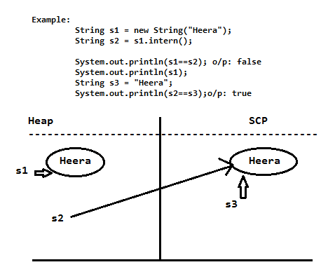

java.lang.String:-
- Once we created a String object we can not perform any changes in the existing object, if we are trying to perform any changes with those changes a new object will be created .
This behavior is called Immutability
- While creating String Object , the Object will created in two area i.e "Heap" and "String Constant Pool" area .
- String s = new String("Heera");
In this case, 2 objects will be created . One is in the "Heap" area and other is in SCP(String Constant Pool Area).
and "s" reference always pointing to Heap Object .
- String s ="Heera"
In this case, only one object will be created in "String Constant Pool" and "s" reference always pointing to that object .
- Note: Garbage Collector is not allowed to access "SCP" area . Hence eventhough object does not contain any reference, then also
the object will not available to Garbage Collector .
- All "SCP" objects will be destroyed automatically at the time of JVM shutdown .
- Object creation in SCP is always optional . First JVM will check is any object already present in SCP with required content or not .
If it is already available then JVM will reuse that object . If it is not available then only a new Object will be created .
- Whenever we are using new operator compulsory an new object will be created on the Heap .
- There may be a chance 2 objects with same content on Heap, but there is no chance of existing 2 objects with the same content on SCP .
- For every String constant, one object will be placed in SCP area .
- Because of some runtime operation like a method call if an object is required to create, it will be created only on the Heap, but not in SCP .
Intering of String objects :-
- By using Heap object reference if we want to get corresponding SCP object reference then we should go for intern() method .

- If the corresponding SCP object is not available then intern() method will create that object and return it .

Importance of String Constant Pool(SCP):-
- In our program, any string object is required to use repeatedly, then it is not recommended to create a separate object for every requirement because memory utilization and performance will be reduced .
- Instead of creating a separate object every time we can create only one object and we can reuse the same object every time . So that performance and memory utilization will be improved .
- We can achieve this by using SCP . Hence the main advantages of SCP are memory utilization and performance will be improved .
- The main disadvantage of SCP is as several references pointing to same object in SCP by using one reference if we are trying to perform any change the remaining references will be impacted .
- To overcome this problem SUN people defined String objects as Immutable .
- According to this once we creating String object we can not perform any changes in the existing object . If we are trying to perform any changes then with those changes a new object will be created .
Hence SCP is the only reason why String object are Immutable .
Why SCP like concept available only for String but not for StringBuffer ?
- String objects are most commonly used objects in Java . Hence SUN people defined specially designed memory area (SCP) for String objects .
- StringBuffer objects are not commonly used objects in Java . Hence SUN people won't define any specially designed memory area for StringBuffer objects .
Why String Objects are immutable ? where as StringBuffer objects are mutable ?
- In case of String objects, just because of SCP a single object is referred by multiple references .
By using one reference if we are all]owed to change the content then remaining references will be impacted .
To overcome this problem SUN people made String objects as immutable .
Similar to String objects is any other objects are immutable ?
- In addition to String objects, all wrapper class objects also immutable in java .
String class Constructor :-
- String s = new String();
Creates an empty String objects .
- String s = new String(String literal);
To create an equivalent String String object on the Heap for the given String literal .
-
String s = new String(StringBuffer sb);
To create an equivalent String object for the given StringBuffer .
-
String s = new String(char[] ch);
To create an equivalent String object for the given char[] array .
char[] ch = {'a','b','c','d'};
String s = new String(ch);
System.out.println(s);o/p:abcd
-
String s = new String(byte[] b);
To create an equivalent String object for the given byte[] array .
byte[] b = {100,101,102,103};
String s = new String(b);
System.out.println(s);o/p:defg
Important methods of String class :
- public char charAt(int index):
returns the character locating at specified index
Example : String s = "Heera";
System.out.println(s.charAt(3)); o/p: r
System.out.println(s.charAt(20)); o/p: ArrayIndexOutOfBoundsException
- public String concat(String s)
String s = "Heera";
s = s.concat("Acharya");
System.out.println(s); o/p: HeeraAcharya
-
public boolean equals(Object o)
- To perform content comparison where case is important
- This is overriding version of Object class equals(_) method .
- public boolean equalsIgnoreCase(String s ):
- String s = "Java";
System.out.println(s.equals("JAVA"));//o/p: false
System.out.println(s.equalsIgnoreCase("JAVA"));o/p: true
- Note: Usually we can use equalsIgnoreCase(_) method to compare user_id where case is not important and where as equals(_) method to compare passwords where case is important .
- public String substring(int begin):
- return substring from begin index to end of the String .
- public String substring(int begin, int end):-
- return substring from begin index to end-1 of the String .
Example : String s = "Gayatree";
System.out.println(s.substring(4));o/p: tree
System.out.println(s.substring(2,6)); o/p: yatr
- public int length() :
- return no of characters present in the String .
Example: String s = "Java";
System.out.println(s.length());o/p:4
- public String replace(char old, char new)
- String s = "aaaa";
System.out.println(s.replace('a','g'));o/p:gggg
- public String toLowerCase()
- public String toUpperCase()
- public String trim():
- It removes all blank spaces present at beginning and end of the String, but not middle blank spaces .
- public int indexOf(char ch) :
- It returns index of first occurrence of specified character .
- public int lastIndexOf(char ch) :
- It returns index of last occurrence of specified character .
String s = "abab";
System.out.println(s.indexOf('a'));o/p:0
System.out.println(s.lastIndexOf('a'));o/p:2
Creation of our own Immutable class :
- Once we created an object we can not perform any changes in the existing object . If we are trying to perform any changes with those changes a new object will be created .
- If there is no change in the content with our operation then existing object will be reused .
- Once we created a Test object we can not perform any changes in the existing object .
- If we are trying to perform any changes with those changes a new object will be created .
- If there is no change in the content then existing object will be reused .
final vs Immutability :
- final applicable for variables, but not for objects where as Immutability applicable for objects, but not for variables .
- By declaring a reference variable as final we won't get any immutability nature in the corresponding object , we can perform any type of changes .
But we can not perform reassignment for the reference variable .
Example: final StringBuffer sb = new StringBuffer("Gayatree");
sb.append("Acharya");
System.out.println(sb);
StringBuffer sb = new StringBuffer("Heera");-CE: can not assgin a value to final variable sb .